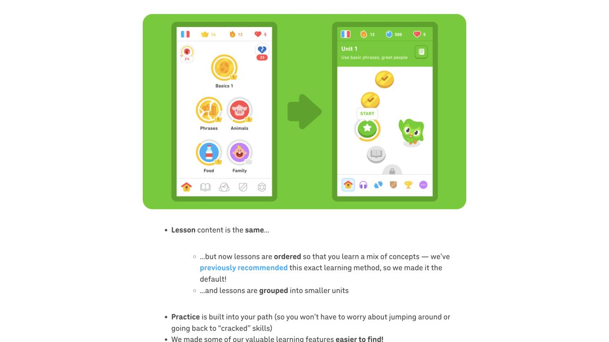

观察与版本
2022 年官方改版说明把首页组织为线性学习路径，并把复习与部分故事整合进路径。本次实际浏览了该文章及新旧首页对照图。图中单元标题、完成节点、当前节点与后续节点形成进度层级；它属于历史发布资料，不能代表所有 2026 客户端。
依据：S24
架构分析 · 项目推论
| 结构 | 可能解决的问题 | 可能产生的成本 |
|---|---|---|
| 单一路径 | 减少选课犹豫、给出下一步 | 限制自由跳转与个体需求 |
| 内容交错 | 安排复习与新内容 | 需要解释为何再次练旧题 |
| 任务节点 | 降低一次承诺的规模 | 长路径可能失去全局感 |
| 阶段标题 | 让用户知道当前目标 | 抽象标签不够解释具体任务 |
BrainLab 候选架构
建议使用“今日练习 / 我的计划 / 游戏库 / 我的记录”四个产品入口，研究知识库作为独立阅读入口。今日练习只给少数任务，游戏库保留自由选择。计划按认知操作与兴趣组织，不能按“修复某脑叶”组织。复习任务标注“再次练习”，用新素材减少死记答案。
系统必须保存的对象
- 计划：目标、任务组合、周期、调整理由与版本。
- 会话：任务版本、难度参数、实际时长、暂停与完成状态。
- 响应：正确/错误类型、提示、反应时间与输入方式。
- 结果：任务内表现、主观负荷、独立评估，分别存储。
- 单一路径是否适合中老年人，需要与目录式选择进行对比测试。
界面样本与观察记录

引用来源与读取范围
- S24 · Duolingo：新版首页与学习路径 ↗2022 · 官方产品说明 · 全文或正文；历史发布版本；本次观察的是官方文章与配图，不是当前原生 App。